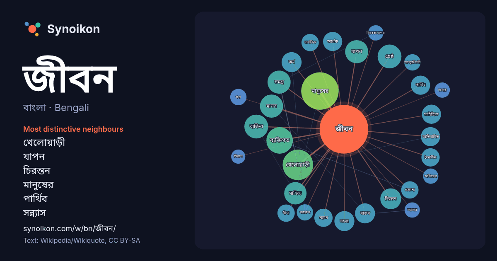

বাংলা · Bengali · popular word
জীবন
“life” · The words found around it in 1219 instances from Bengali Wikipedia, Wikiquote.

Most distinctive neighbours
- খেলোয়াড়ী 16×
- যাপন 15×
- চিরন্তন 13×
- মানুষের 12×
- পার্থিব 11×
- সন্ন্যাস 10×
- কর্ম 9.7×
- দৈনন্দিন 9.4×
- ব্যক্তির 9.1×
- শ্রেষ্ঠ 9.1×
- বাস্তব 9.1×
- মানব 9.0×
- সাহিত্যিক 8.9×
- বীমা 8.9×
- অর্ধেক 8.9×
- প্রকাশ্য 8.9×
- ব্যক্তিগত 8.4×
- আত্মজীবনী 8.1×
- সহজ 7.9×
- সমগ্র 7.7×
× = how many times more often than in general Bengali Wikipedia text.
Most frequent neighbours
- একজন 44
- মানুষের 42
- অভিনয় 29
- চলচ্চিত্র 29
- খেলোয়াড়ী 28
- ব্যক্তিগত 21
- সময় 21
- শেষ 20
- সম্পর্কে 20
- জন্ম 18
- বছর 17
- ব্যক্তির 17
- মৃত্যু 17
- শিক্ষা 17
- শ্রেষ্ঠ 17
- মানব 16
- যাপন 16
- সকল 16
- সমগ্র 16
- মানুষ 15
In context
- কর্মকাণ্ড জীবনের উপস্থিতি নির্দেশ করে। জীবন বা প্রাণ বিষয়ক শিক্ষা জীববিজ্ঞানে আলোচিত হয়। প্রোটোপ্লাজমের ক্রিয়াকলাপকে জীবন বলা হয়। জীবন হল সেই সকল Wikipedia snippets · জীবন
- জীবন বোস বা জীবন বসু (জন্ম ১৯১৫ সালে এবং মৃত্যু ২১ মার্চ ১৯৭৫ সালে) তিনি ছিলেন একজন ভারতীয় অভিনেতা যিনি বাংলা চলচ্চিত্রে কাজ করতেন। তিনি উত্তম কুমারের Wikipedia snippets · জীবন বোস
- অন্য জীবন ১৯৯৫ সালে মুক্তিপ্রাপ্ত বাংলাদেশী বাংলা ভাষার চলচ্চিত্র। চলচ্চিত্রটির চিত্রনাট্য লিখেছেন ও পরিচালনা করেছেন নন্দিত চলচ্চিত্রকার শেখ নিয়ামত আলী। Wikipedia snippets · অন্য জীবন (চলচ্চিত্র)
- জীবন থেকে নেয়া একটি বাংলা চলচ্চিত্র। জহির রায়হান এর নির্মিত এই চলচ্চিত্রটি ১৯৭০ সালের এপ্রিলে মুক্তি পায়। সামাজিক এই চলচ্চিত্রে তৎকালীন বাঙালি স্বাধীনতা Wikipedia snippets · জীবন থেকে নেয়া
- থাকায় মঙ্গল গ্রহে জীবন খুঁজে পাওয়ার সম্ভাবনা জ্যোতির্জীববিজ্ঞানের একটি অত্যন্ত আগ্রহের বিষয়। এখন অব্দি মঙ্গল গ্রহে কোন জীবনের উপস্থিতির প্রমাণ পাওয়া Wikipedia snippets · মঙ্গল গ্রহে জীবন
- রবীন্দ্রনাথ ঠাকুরের শেষ জীবন (১৯৩২–১৯৪১) কবির দীর্ঘ অসুস্থতার সময়। এই সময় রবীন্দ্রনাথ তার রচনায় মূলত মৃত্যুর প্রকৃতি অনুধাবনে মনোনিবেশ করেছেন। বিভিন্ন Wikipedia snippets · রবীন্দ্রনাথ ঠাকুরের শেষ জীবন
- জীবন মেন্ডিস (সিংহলি: ජීවන් මෙන්ඩිස්; জন্ম: ১৫ জানুয়ারি, ১৯৮৩) কলম্বোয় জন্মগ্রহণকারী শ্রীলঙ্কান ক্রিকেটার। শ্রীলঙ্কা ক্রিকেট দলের অন্যতম সদস্য জীবন Wikipedia snippets · জীবন মেন্ডিস
- আহারে জীবন ২০২৪ সালের একটি বাংলাদেশী চলচ্চিত্র। করোনাকালীন বাংলাদেশের সমাজবাস্তবতা প্রেক্ষাপটে চলচ্চিত্রটি নির্মিত। চলচ্চিত্রটি পরিচালনা করছেন ছটকু আহমেদ। Wikipedia snippets · আহারে জীবন
More Bengali words
- অরণ্য
- আয়না
- ইতিহাস
- ঈশ্বর
- কাজ
- কুকুর
- ক্ষমতা
- খাদ্য
- গান
- গ্রীষ্ম
- ঘড়ি
- ঘণ্টা
- ঘোড়া
- ছায়া
- জননী
- জলবায়ু
- ঝড়
- টাকা
- ট্রেন
- দারুচিনি
- দ্বীপ
- নক্ষত্র
- নীরবতা
- পরিবার
- পানি
- পাহাড়
- প্রকৃতি
- বাগান
- বিজ্ঞান
- বিড়াল
- বৃষ্টি
- ভাষা
- মধু
- মরুভূমি
- মানচিত্র
- মৃত্যু
- রাস্তা
- রুটি
- লবণ
- শরৎ
- শহর
- শিল্প
- শীত
- সত্য
- সময়
- সেতু
- সোনা
- স্বাস্থ্য
- হৃদয়
Precomputed on 2026-10-09 with default settings (±5 words, medium corpus). The interactive map can refresh it with live data.